Fan Yang's Home Page
Home
[ Short Biography, Research Interests, Research Experience, Education ]
| 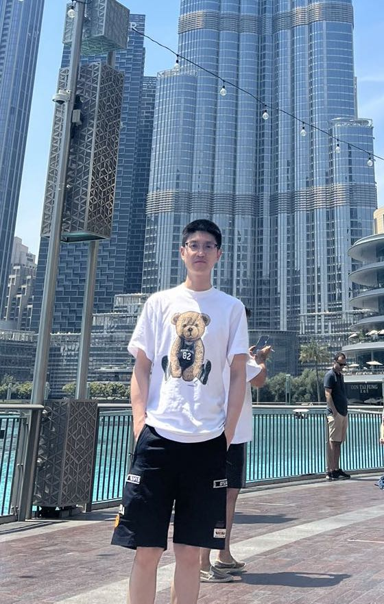 |
Fan Yang, Ph.D.
Senior Scientist
E-mail: fanyang_uestc@hotmail.com |


Short Biography
Fan Yang received the B.S. degree in software engineering from Southwest Petroleum University in 2010, and the Doctor’s degree in information and communication engineering from University of Electronic Science and Technology of China (UESTC), in 2018. He was a research intern with Microsoft Research Asia (MSRA). He was a research scholar in the department of computer science, University of North Carolina and also in the department of Radiology and BRIC, University of North Carolina. He was Research Associate in IIAI. Now, he is a senior scientist with AIQ, UAE. His research interests include computer vision, deep learning and medical image processing.
Research Experience
Senior Scientist (March 2020--Now)
AIQ, Abu Dhabi, UAE.
Research Associate (March 2019--March 2020)
Inception Institute of Artificial Intelligence, Abu Dhabi, UAE.Post Doctoral (August 2018--March 2019)
IDEA Research Lab in the Department of Radiology, University of North Carolina at Chapel Hill, NC, USA.Research Intern (September 2016--April 2017)
Microsoft Research Asia, Beijing, China.
Education
PhD. student (September 2012--June 2018)
School of Computer Science and Engineering,
University of Electronic Science and Technology of China, Chengdu, China.
Advisor: Professor Hong Cheng & Professor Jianping Li.M.S. student (September 2010--June 2012)
School of Computer Science and Engineering,
University of Electronic Science and Technology of China, Chengdu, China.
Advisor: Professor Jianping Li.B.S. student (September 2006--June 2010)
School of Computer Science,
Southwest Petroleum University, Xindu, China.
Major: Software Engineering.
Selected Publication
| 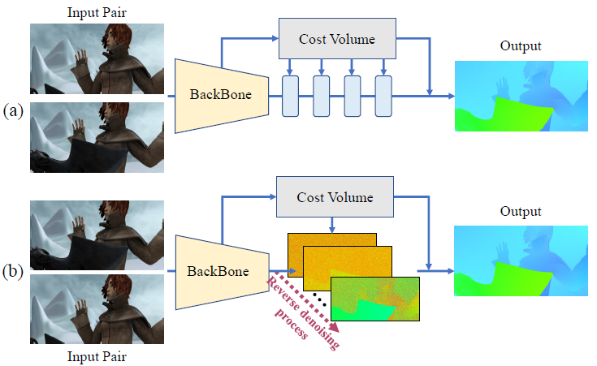 |
FlowDiffuser: Advancing Optical Flow Estimation with Diffusion Models |
| 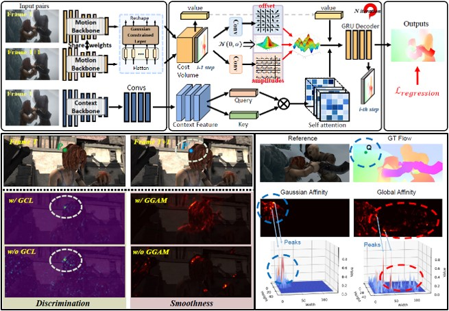 |
GAFlow: Incorporating Gaussian Attention into Optical Flow |
| 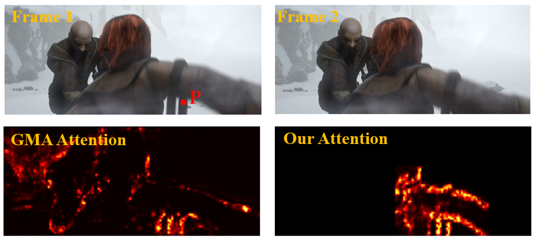 |
Learning Optical Flow with Kernel Patch Attention |
| 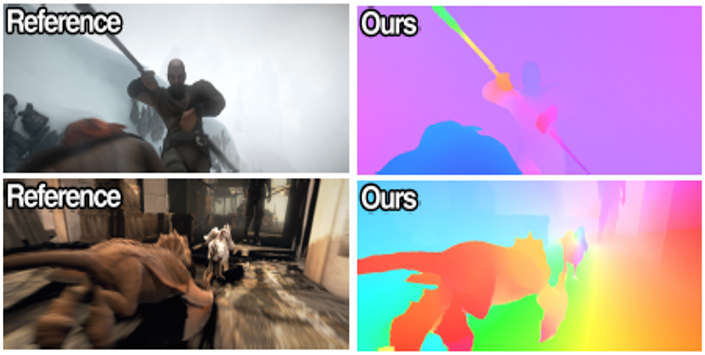 |
Learning Optical Flow with Adaptive Graph Reasoning |
| 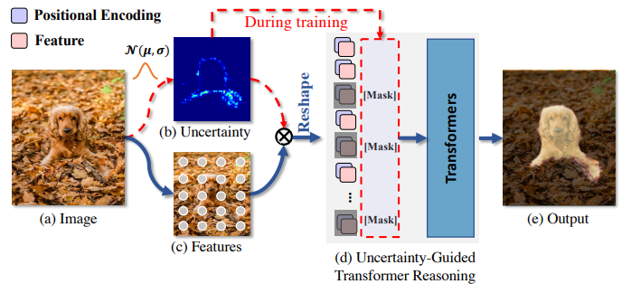 |
Uncertainty-Guided Transformer Reasoning for Camouflaged Object Detection |
| 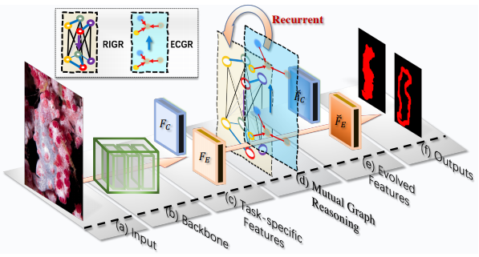 |
Mutual Graph Learning for Camouflaged Object Detection |
| 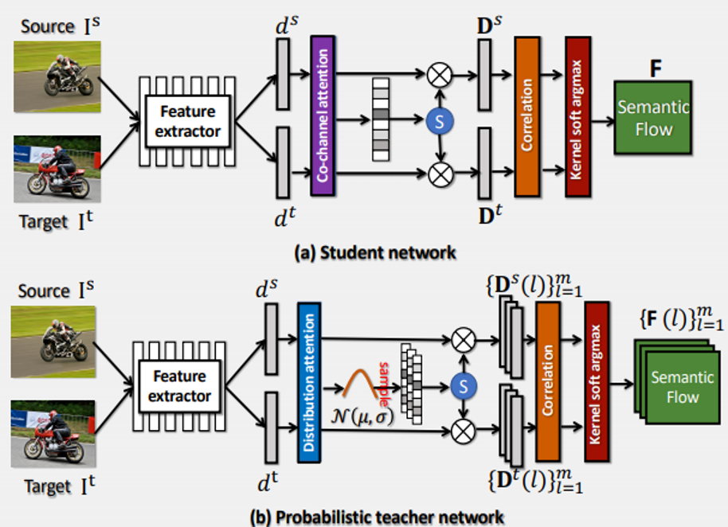 |
Probabilistic Model Distillation for Semantic Correspondence |
| 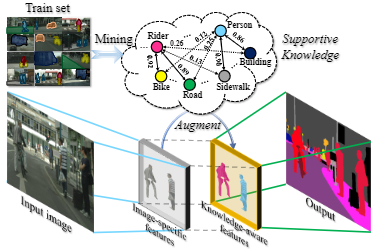 |
Robust Scene Parsing by Mining Supportive Knowledge from Dataset |
| 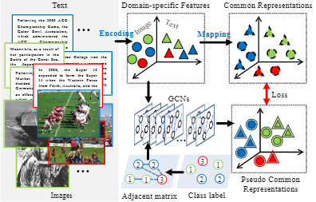 |
Exploring Graph-Structured Semantics for Cross-Modal Retrieval |
| 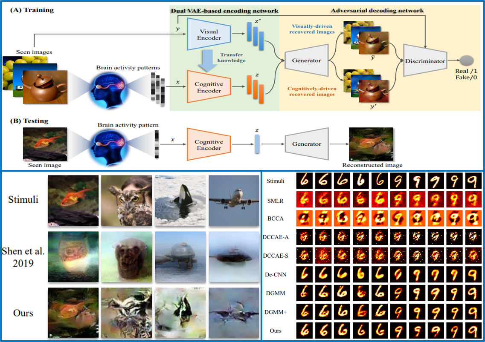 |
Reconstructing perceived images from brain activity by visually-guided cognitive representation and adversarial learning |
| 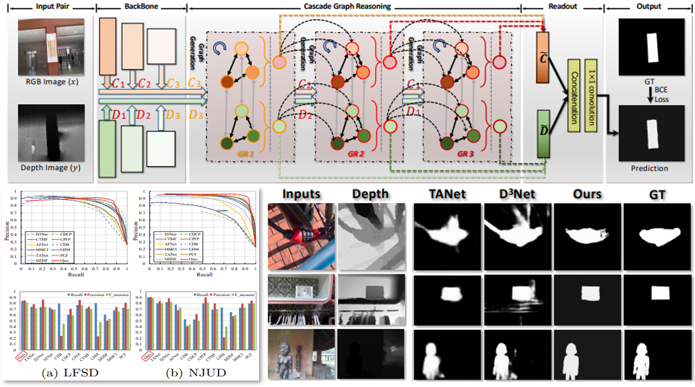 |
Cascade graph neural networks for rgb-d salient object detection |
| 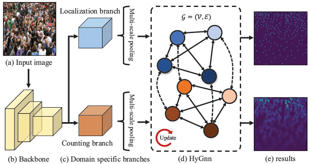 |
Hybrid Graph Neural Networks for Crowd Counting |
| 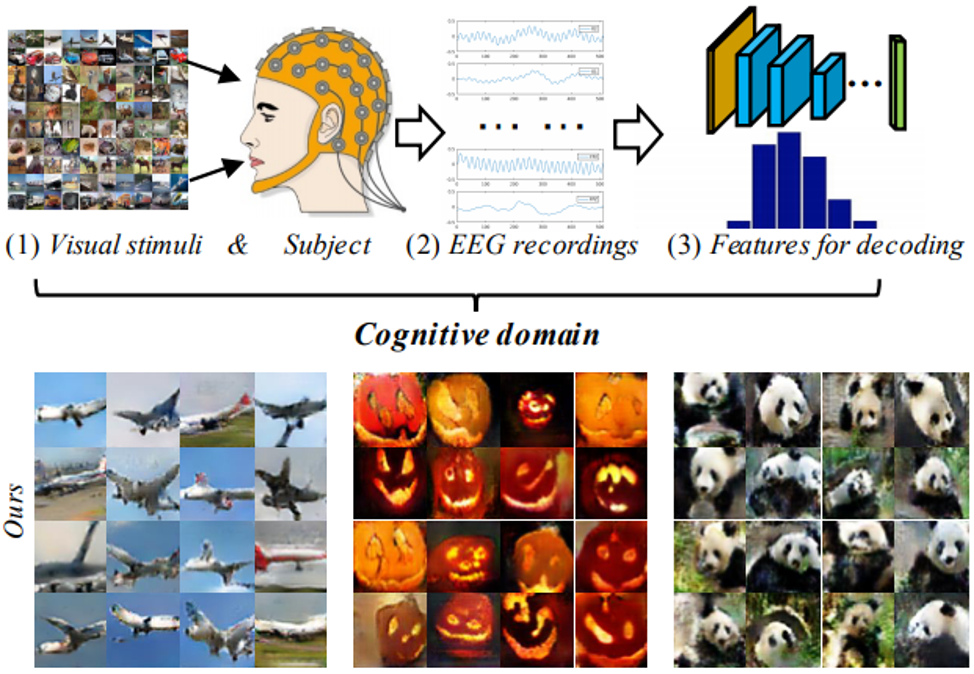 |
Decoding EEG by Visual-guided Deep Neural Networks |
| 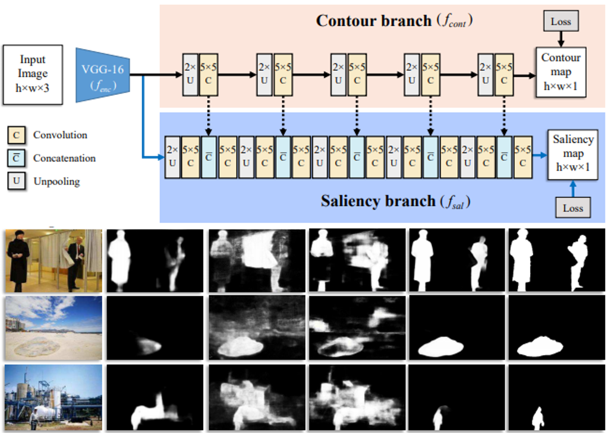 |
Contour Knowledge Transfer for Salient Object Detection |
| 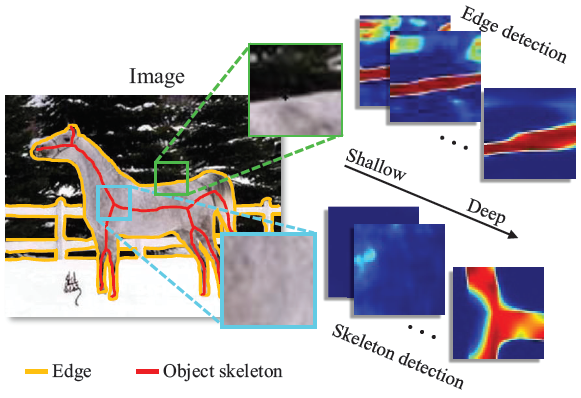 |
Multi-Scale Bidirectional FCN for Object Skeleton Extraction |
| 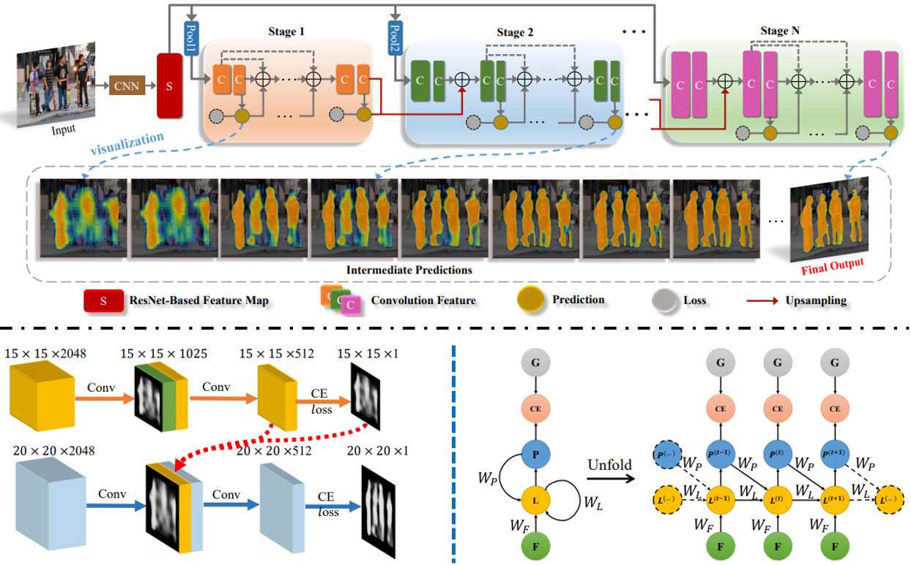 |
Multi-Scale Cascade Network for Salient Object Detection |
| 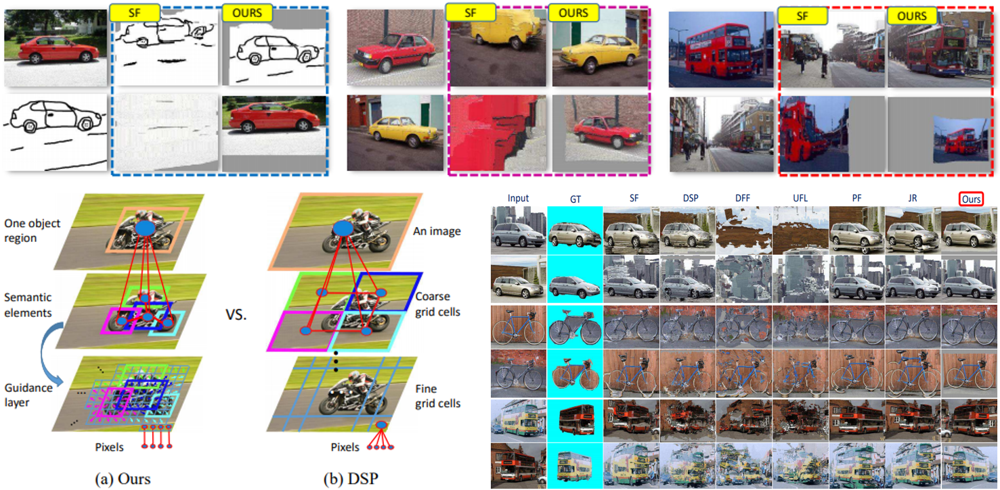 |
Object-aware Dense Semantic Correspondence |
| 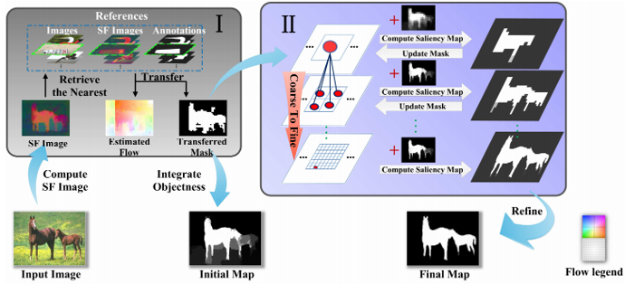 |
Saliency Transfer: An Example-Based Method for Salient Object Detection |